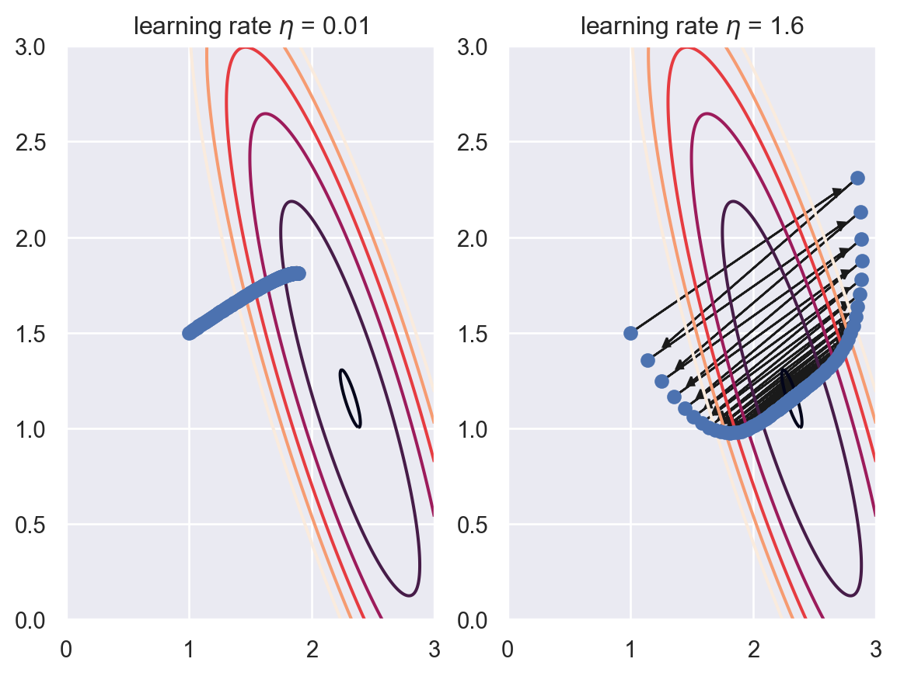
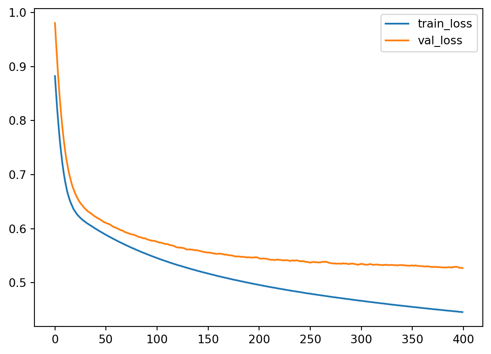
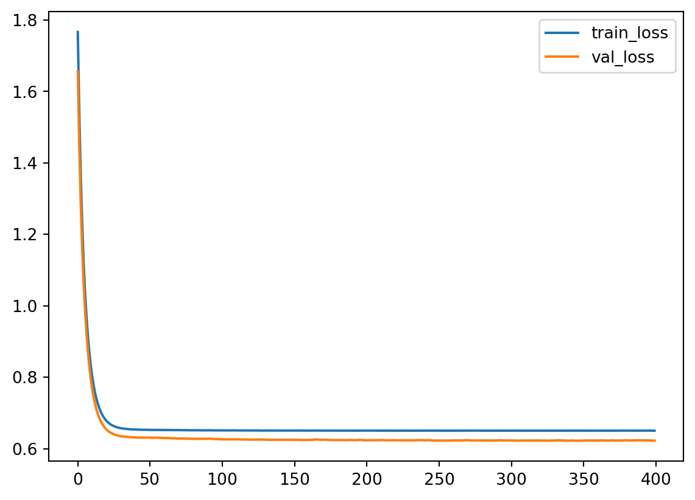

5 Logistic regression
Consider a set of training data \((x^{(1)}, y^{(1)}), (x^{(2)}, y^{(2)}), \ldots\), where \(x^{(i)}=(x^{(i)}_1, x^{(i)}_2, \ldots, x^{(i)}_n)\) is a \(n\)-dim vector, and \(y^{(i)}\) is a real number. We would like to use Linear regression to find the relation between \(x\) and \(y\).
In this case, we assume that \(y\) is a linear function of \(x\):
\[ y=\theta_0 + \sum_{j=1}^n\theta_jx_j. \] The purpose of Linear regression is to used the given training data to find out the best \(\Theta=(\theta_0, \theta_1, \theta_2,\ldots,\theta_n)\).
If we set \(\hat{x}=(1, x_1, \ldots,x_n)\), then the above formula can be reformulated by matrix multiplication.
\[ y=\Theta \hat{x}^T. \]
When we want to deal with classification problem, we may still use this regression idea, but we have to do some modification.
5.1 Basic idea
The Logsitic regression is used to predict the probability of a data point belonging to a specific class. It is based on linear regression. The major difference is that logistic regreesion will have an activation function \(\sigma\) at the final stage to change the predicted values of the linear regression to the values that indicate classes. In the case of binary classification, the outcome of \(\sigma\) will be between \(0\) and \(1\), which is related to the two classes respectively. In this case, the number is interepted as the probability of the data to be in one of the specific class.
The model for Logistic regression is as follows:
\[ p=\sigma(L(x))=\sigma\left(\theta_0+\sum_{j=1}^n\theta_jx_j\right)=\sigma\left(\Theta \hat{x}^T\right). \]
In most cases, this activation function is chosen to be the Sigmoid funciton.
5.1.1 Sigmoid function
The Sigmoid function is defined as follows:
\[ \sigma(z)=\frac{1}{1+\mathrm{e}^{-z}}. \] The graph of the function is shown below.
The main properties of \(\sigma\) are listed below as a Lemma.
Lemma 5.1 The Sigmoid function \(\sigma(z)\) satisfies the following properties.
- \(\sigma(z)\rightarrow \infty\) when \(z\mapsto \infty\).
- \(\sigma(z)\rightarrow -\infty\) when \(z\mapsto -\infty\).
- \(\sigma(0)=0.5\).
- \(\sigma(z)\) is always increasing.
- \(\sigma'(z)=\sigma(z)(1-\sigma(z))\).
Solution. We will only look at the last one.
\[ \begin{split} \sigma'(z)&=-\frac{(1+\mathrm e^{-z})'}{(1+\mathrm e^{-z})^2}=\frac{\mathrm e^{-z}}{(1+\mathrm e^{-z})^2}=\frac{1}{1+\mathrm e^{-z}}\frac{\mathrm e^{-z}}{1+\mathrm e^{-z}}\\ &=\sigma(z)\left(\frac{1+\mathrm e^{-z}}{1+\mathrm e^{-z}}-\frac{1}{1+\mathrm e^{-z}}\right)=\sigma(z)(1-\sigma(z)). \end{split} \]
5.1.2 Gradient descent
Assume that we would like to minimize a function \(J(\Theta)\), where this \(\Theta\) is an \(N\)-dim vector. Geometricly, we could treat \(J\) as a height function, and it tells us the height of the mountain. Then to minimize \(J\) is the same thing as to find the lowest point. One idea is to move towards the lowest point step by step. During each step we only need to lower our current height. After several steps we will be around the lowest point.
The geometric meaning of \(\nabla J\) is the direction that \(J\) increase the most. Therefore the opposite direction is the one we want to move in. The formula to update \(x\) is
\[ \Theta_{\text{new}} = \Theta_{\text{old}}-\alpha \nabla J(\Theta_{\text{old}}), \] where \(\alpha\) is called the learning rate which controls how fast you want to learn. Usually if \(\alpha\) is small, the learning tends to be slow and stble, and when \(\alpha\) is big, the learning tends to be fast and unstable.
In machine learning, in most cases we would like to formulate the problem in terms of finding the lowest point of a cost function \(J(\Theta)\). Then we could start to use Logistic regression to solve it. For binary classification problem, the cost function is defined to be
\[ J(\Theta)=-\frac1m\sum_{i=1}^m\left[y^{(i)}\log(p^{(i)})+(1-y^{(i)})\log(1-p^{(i)})\right]. \] Here \(m\) is the number of data points, \(y^{(i)}\) is the labelled result (which is either \(0\) or \(1\)), \(p^{(i)}\) is the predicted value (which is between \(0\) and \(1\)).
Note
The algorithm gets its name since we are using the gradient to find a direction to lower our height.
5.1.3 The Formulas
Theorem 5.1 The gradient of \(J\) is computed by
\[ \nabla J =\frac1m(\textbf{p}-\textbf{y})^T\hat{\textbf{X}}. \tag{5.1}\]
Click for details.
Proof. The formula is an application of the chain rule for the multivariable functions.
\[ \begin{split} \dfrac{\partial p}{\partial \theta_k}&=\dfrac{\partial}{\partial \theta_k}\sigma\left(\theta_0+\sum_{j=1}^n\theta_jx_j\right)=\dfrac{\partial}{\partial \theta_k}\sigma(L(\Theta))\\ &=\sigma(L)(1-\sigma(L))\dfrac{\partial}{\partial \theta_k}\left(\theta_0+\sum_{j=1}^n\theta_jx_j\right)\\ &=\begin{cases} p(1-p)&\text{ if }k=0,\\ p(1-p)x_k&\text{ otherwise}. \end{cases} \end{split} \] Then
\[ \nabla p = \left(\frac{\partial p}{\partial\theta_0},\ldots,\frac{\partial p}{\partial\theta_n}\right) = p(1-p)\hat{x}. \]
Then
\[ \nabla \log(p) = \frac{\nabla p}p =\frac{p(1-p)\hat{x}}{p}=(1-p)\hat{x}. \]
\[ \nabla \log(1-p) = \frac{-\nabla p}{1-p} =-\frac{p(1-p)\hat{x}}{1-p}=-p\hat{x}. \]
Then
\[ \begin{split} \nabla J& = -\frac1m\sum_{i=1}^m\left[y^{(i)}\nabla \log(p^{(i)})+(1-y^{(i)})\nabla \log(1-p^{(i)})\right]\\ &=-\frac1m\sum_{i=1}^m\left[y^{(i)}(1-p^{(i)})\hat{x}^{(i)}+(1-y^{(i)})(-p^{(i)}\hat{x}^{(i)})\right]\\ &=-\frac1m\sum_{i=1}^m\left[(y^{(i)}-p^{(i)})\hat{x}^{(i)}\right]. \end{split} \]
We write \(\hat{x}^{(i)}\) as row vectors, and stack all these row vectors vertically. What we get is a matrix \(\hat{\textbf X}\) of the size \(m\times (1+n)\). We stack all \(y^{(i)}\) (resp. \(p^{(i)}\)) vectically to get the \(m\)-dim column vector \(\textbf y\) (resp. \(\textbf p\)).
Using this notation, the previous formula becomes
\[ \nabla J =\frac1m(\textbf{p}-\textbf{y})^T\hat{\textbf{X}}. \]
After the gradient can be computed, we can start to use the gradient descent method. Note that, although \(\Theta\) are not explicitly presented in the formula of \(\nabla J\), this is used to modify \(\Theta\):
\[ \Theta_{s+1} = \Theta_s - \alpha\nabla J. \]
5.1.4 Codes
We will only talk about using packages. sklearn provides two methods to implement the Logistic regression. The API interface is very similar to other models.
Note that Logistic regression is very sensitive to the scale of features. Therefore we need to normalize the features before throwing them into the model.
Let’s still take iris as an example.
The first method is sklearn.linear_model.LogisticRegression.
from sklearn.linear_model import LogisticRegression
from sklearn.pipeline import Pipeline
from sklearn.preprocessing import MinMaxScaler
steps = [('normalize', MinMaxScaler()),
('log', LogisticRegression())]
log_reg = Pipeline(steps=steps)
log_reg.fit(X_train, y_train)
log_reg.score(X_test, y_test)0.9565217391304348Note that this method has an option solver that will set the way to solve the Logistic regression problem, and there is no “stochastic gradient descent” provided. The default solver for this LogsiticRegression is lbfgs which will NOT be discussed in lectures.
The second method is sklearn.linear_model.SGDClassifier.
from sklearn.linear_model import SGDClassifier
from sklearn.pipeline import Pipeline
from sklearn.preprocessing import MinMaxScaler
steps = [('normalize', MinMaxScaler()),
('log', SGDClassifier(loss='log_loss', max_iter=100))]
sgd_clf = Pipeline(steps=steps)
sgd_clf.fit(X_train, y_train)
sgd_clf.score(X_test, y_test)0.782608695652174This method is the one we discussed in lectures. The log_loss loss function is the binary entropy function we mentioned in lectures. If you change to other loss functions it will become other models.
From the above example, you may notice that SGDClassifier doesn’t perform as well as LogisticRegression. This is due to the algorithm. To make SGDClassifier better you need to tune the hyperparameters, like max_iter, learning_rate/alpha, penalty, etc..
Note
The argument warm_start is used to set whether you want to use your previous model. When set to True, it will reuse the solution of the previous call to fit as initialization, otherwise, just erase the previous solution. The default is False.
Repeatedly calling fit when warm_start is True can result in a different solution than when calling fit a single time because of the way the data is shuffled.
Note
Note that for both methods, regularization (which will be discussed later) is applied by default.
5.1.5 Several important side topics
5.1.5.1 Epochs
We use epoch to describe feeding data into the model. One Epoch is when an entire dataset is passed through the model once. When using gradient descent, we tend to run several epochs. The number of maximal epochs is one important hyperparameter of this model.
The general idea is that more epochs are better for the score of the model, but it will definitely be slower. In addition, sometimes due to many other factors, after a few epochs, the model becomes stall. To train for more epochs cannot improve the model. In this case you have to turn to other methods.
5.1.5.2 Batch Gradient Descent vs SGD vs Minibatch
Recall the Formula Equation 5.1:
\[ \nabla J =\frac1m(\textbf{p}-\textbf{y})^T\hat{\textbf{X}}. \] We could rewrite this formula:
\[ \nabla J =\frac1m(\textbf{p}-\textbf{y})^T\hat{\textbf{X}}=\frac1m\sum_{i=1}^m\left[(p^{(i)}-y^{(i)})\hat{x}^{(i)}\right]. \] This new formula can be understood in the following way: For every data point, we could get one gradient direction. Then \(\nabla J\) is the average of all gradient directions. So this algorithm can be expressed as that compute the gradient for every data points and then take the average, and finally update the parameters once. This algorithm is called batch gradient descent.
Following the idea, there is another way to update the model. For every data point, we could compute one gradient direction, and we could use the gradient direction to update the parameters of the model. This algorithm is called stochastic gradient descent.
Then there is an algrothm living in the middle, called mini-batch gradient descent. In this case, we will group the data set into a collection of subsets of a fiexed number of training examples. Each subset is called a mini-batch, and the fixed number of elements of each mini-batch is called the batch size. Using this method, we will just go through mini-batches one at a time, compute the average of the gradient for these data, and then update the parameters of the model after we finish one mini-batch. Assume that the total number of the dataset is N, the mini-batch size is m. Then there are N/m mini-batches, and during one epoch we will update the model N/m times.
Mini-batch size is one important hyperparameters of this model. Usually the larger the batch size is, the less variance the model has. Then it tends to behave more smoothly, but it will also be slower, and might be stuck to a local minimal. The smaller batch size is more chaotic. It might go faster, but it tends not to converge.
5.2 Regularization
5.2.1 Three types of errors
Every estimator has its advantages and drawbacks. Its generalization error can be decomposed in terms of bias, variance and noise. The bias of an estimator is its average error for different training sets. The variance of an estimator indicates how sensitive it is to varying training sets. Noise is a property of the data.
5.2.2 Underfit vs Overfit
When fit a model to data, it is highly possible that the model is underfit or overfit.
Roughly speaking, underfit means the model is not sufficient to fit the training samples, and overfit means that the models learns too many noise from the data. In many cases, high bias is related to underfit, and high variance is related to overfit.
The following example is from the sklearn guide. Although it is a polynomial regression example, it grasps the key idea of underfit and overfit.

5.2.3 Learning curves (accuracy vs training size)
A learning curve shows the validation and training score of an estimator for varying a key hyperparameter. In most cases the key hyperparameter is the training size or the number of epochs. It is a tool to find out how much we benefit from altering the hyperparameter by training more data or training for more epochs, and whether the estimator suffers more from a variance error or a bias error.
sklearn provides sklearn.model_selection.learning_curve() to generate the values that are required to plot such a learning curve. However this function is just related to the sample size. If we would like to talk about epochs, we need other packages.
Let us first look at the learning curve about sample size. The official document page is here. The function takes input estimator, dataset X, y, and an arry-like argument train_sizes. The dataset (X, y) will be split into pieces using the cross-validation technique. The number of pieces is set by the argument cv. The default value is cv=5. For details about cross-validation please see Section 2.2.6.
Then the model is trained over a random sample of the training set, and evaluate the score over the test set. The size of the sample of the training set is set by the argument train_sizes. This argument is array-like. Therefore the process will be repeated several times, and we can see the impact of increasing the training size.
The output contains three pieces. The first is train_sizes_abs which is the number of elements in each training set. This output is mainly for reference. The difference between the output and the input train_sizes is that the input can be float which represents the percentagy. The output is always the exact number of elements.
The second output is train_scores and the third is test_scores, both of which are the scores we get from the training and testing process. Note that both are 2D numpy arrays, of the size (number of different sizes, cv). Each row is a 1D numpy array representing the cross-validation scores, which is corresponding to a train size. If we want the mean as the cross-validation score, we could use train_scores.mean(axis=1).
After understanding the input and output, we could plot the learning curve. We still use the horse colic as the example. The details about the dataset can be found here.
import pandas as pd
import numpy as np
url = 'http://archive.ics.uci.edu/ml/machine-learning-databases/horse-colic/horse-colic.data'
df = pd.read_csv(url, delim_whitespace=True, header=None)
df = df.replace("?", np.NaN)
df.fillna(0, inplace=True)
df.drop(columns=[2, 24, 25, 26, 27], inplace=True)
df[23].replace({1: 1, 2: 0}, inplace=True)
X = df.iloc[:, :-1].to_numpy().astype(float)
y = df[23].to_numpy().astype(int)
from sklearn.model_selection import train_test_split
X_train, X_test, y_train, y_test = train_test_split(X, y, test_size=0.15, random_state=42)We use the model LogisticRegression. The following code plot the learning curve for this model.
from sklearn.linear_model import LogisticRegression
from sklearn.preprocessing import MinMaxScaler
from sklearn.pipeline import Pipeline
clf = LogisticRegression(max_iter=1000)
steps = [('scalar', MinMaxScaler()),
('log', clf)]
pipe = Pipeline(steps=steps)
from sklearn.model_selection import learning_curve
import numpy as np
train_sizes, train_scores, test_scores = learning_curve(pipe, X_train, y_train,
train_sizes=np.linspace(0.1, 1, 20))
import matplotlib.pyplot as plt
plt.plot(train_sizes, train_scores.mean(axis=1), label='train')
plt.plot(train_sizes, test_scores.mean(axis=1), label='test')
plt.legend()The learning curve is a primary tool for us to study the bias and variance. Usually
- If the two training curve and the testing curve are very close to each other, this means that the variance is low. Otherwise the variance is high, and this means that the model probabily suffer from overfitting.
- If the absolute training curve score is high, this means that the bias is low. Otherwise the bias is high, and this means that the model probabily suffer from underfitting.
In the above example, although regularization is applied by default, you may still notice some overfitting there.
5.2.4 Regularization
Regularization is a technique to deal with overfitting. Here we only talk about the simplest method: ridge regression, also known as Tikhonov regularizaiton. Because of the formula given below, it is also called \(L_2\) regularization. The idea is to add an additional term \(\dfrac{\alpha}{2m}\sum_{i=1}^m\theta_i^2\) to the original cost function. When training with the new cost function, this additional term will force the parameters in the original term to be as small as possible. After finishing training, the additional term will be dropped, and we use the original cost function for validation and testing. Note that in the additional term \(\theta_0\) is not presented.
The hyperparameter \(\alpha\) is the regularization strength. If \(\alpha=0\), the new cost function becomes the original one; If \(\alpha\) is very large, the additional term dominates, and it will force all parameters to be almost \(0\). In different context, the regularization strength is also given by \(C=\dfrac{1}{2\alpha}\), called inverse of regularization strength.
5.2.4.1 The math of regularization
Theorem 5.2 The gradient of the ridge regression cost function is
\[ \nabla J=\frac1m(\textbf{p}-\textbf{y})^T\hat{\textbf{X}}+\frac{\alpha}{m}\Theta. \]
Note that \(\Theta\) doesn’t contain \(\theta_0\), or you may treat \(\theta_0=0\).
The computation is straightforward.
5.2.4.2 The code
Regularization is directly provided by the logistic regression functions.
- In
LogisticRegression, the regularization is given by the argumentpenaltyandC.penaltyspecifies the regularizaiton method. It isl2by default, which is the method above.Cis the inverse of regularization strength, whose default value is1. - In
SGDClassifier, the regularization is given by the argumentpenaltyandalpha.penaltyis the same as that inLogisticRegression, andalphais the regularization strength, whose default value is0.0001.
Let us see the above example.
clf = LogisticRegression(max_iter=1000, C=0.1)
steps = [('scalar', MinMaxScaler()),
('log', clf)]
pipe = Pipeline(steps=steps)
from sklearn.model_selection import learning_curve
import numpy as np
train_sizes, train_scores, test_scores = learning_curve(pipe, X_train, y_train,
train_sizes=np.linspace(0.1, 1, 20))
import matplotlib.pyplot as plt
plt.plot(train_sizes, train_scores.mean(axis=1), label='train')
plt.plot(train_sizes, test_scores.mean(axis=1), label='test')
plt.legend()After we reduce C from 1 to 0.1, the regularization strength is increased. Then you may find that the gap between the two curves are reduced. However the overall performace is also reduced, from 85%~90% in C=1 case to around 80% in C=0.1 case. This means that the model doesn’t fit the data well as the previous one. Therefore this is a trade-off: decrease the variance but increase the bias.
5.3 Neural network implement of Logistic regression
In the previous sections, we use gradient descent to run the Logistic regression model. We mentioned some important concepts, like epochs, mini-batch, etc.. But we didn’t implement them. In fact sklearn doesn’t provide a very good tool to do all these computations. Hence we turn to another package for this model. We are going to use keras to build a Logistic regression model, and plot the “loss vs epochs” learning curves.
keras is high level Neural network library. It is now in the phase of transition from single backend tensorflow to multi-backend. The old version is installed along with tensorflow. You may use the following command to install it.
If you want to use new version, besides installing tensorflow, you should also install keras-core. Currently we still use tensorflow as the backend. This part may be updated after the stable version is released.
You may follow the instructions for tensforflow and keras for more details.
To use keras to implement logistic regression, we need the following modules: a Sequential model, a Dense layer. The model is organized as follows.
We still use the horse colic dataset as an example.
import pandas as pd
import numpy as np
url = 'http://archive.ics.uci.edu/ml/machine-learning-databases/horse-colic/horse-colic.data'
df = pd.read_csv(url, delim_whitespace=True, header=None)
df = df.replace("?", np.NaN)
df.fillna(0, inplace=True)
df.drop(columns=[2, 24, 25, 26, 27], inplace=True)
df[23].replace({1: 1, 2: 0}, inplace=True)
X = df.iloc[:, :-1].to_numpy().astype(float)
y = df[23].to_numpy().astype(int)
from sklearn.model_selection import train_test_split
X_train, X_test, y_train, y_test = train_test_split(X, y, test_size=0.15, random_state=42)Note that we need to perform normalization before throwing the data into the model. Here we use the MinMaxScaler() from sklearn package. The normalization layer in keras is a little bit more complicated and doesn’t fit into situation.
In the following code, we first set up the model, and then add one Dense layer. This Dense layer means that we would perform a linear transformation to the input, by the formula \(\theta_0+\theta_1x_1+\theta_2x_2+\ldots+\theta_nx_n\). Then there are three arguments:
1: means that there is only output.activation='sigmoid': means that we will apply thesigmoidfunction after the linear transformation.input_dim: means the dimension of the input. Note that this dimension is the dimension of one individual data point. You don’t take the size of the training set into consideration.
After building the basic architectal of the model, we need to speicify a few more arguments. In the model.compile() step, we have to input the optimizer, the loss function (which is the binary_crossentropy in our case) and the metrics to test the performance of the model (which is accuracy in our case).
The optimizer is how the parameters are updated. The best choice in general is adam. The default setting is RMSprop and the optimizer discussed in our lecture is sgd. We will use adam here, since the learning curve it produces looks better (for illustration).
Finally we could train the model. The argument is straightforward.
# import keras_core as keras
from keras import models, layers
model = models.Sequential()
model.add(layers.Dense(1, activation='sigmoid', input_dim=X_train.shape[1]))
model.compile(optimizer='adam', loss='binary_crossentropy', metrics=['accuracy'])
hist = model.fit(X_train, y_train, epochs=400, batch_size=30, validation_data=(X_test, y_test))Note that we assign the output of model.fit() to a variable hist. The infomation about this training process is recorded inside. We will extract those information.
We now could plot the learning curve (loss vs epochs) and the learning curve (accuracy vs epochs).
import matplotlib.pyplot as plt
plt.plot(loss_train, label='train_loss')
plt.plot(loss_val, label='val_loss')
plt.legend()
5.3.1 Regularization
To apply regularization, we just need to modify the layer we added to the model. The argument is kernel_regularizer. We would like to set it to be keras.regularizers.L2(alpha), where alpha is the regularization strength.
from keras import models, layers, regularizers
model = models.Sequential()
model.add(layers.Dense(1, activation='sigmoid', input_dim=X_train.shape[1],
kernel_regularizer=regularizers.L2(0.5)))
model.compile(optimizer='sgd', loss='binary_crossentropy', metrics=['accuracy'])
hist = model.fit(X_train, y_train, epochs=400, batch_size=30,
validation_data=(X_test, y_test))loss_train = hist.history['loss']
loss_val = hist.history['val_loss']
acc_train = hist.history['accuracy']
acc_val = hist.history['val_accuracy']
plt.plot(loss_train, label='train_loss')
plt.plot(loss_val, label='val_loss')
plt.legend()
You may compare what we get here with the codes we get before.
5.4 Multi class case
5.4.1 Naive idea (one-vs-all)
Assume that there are \(N\) classes. The naive idea is to decompose this \(N\)-class classification problem into \(N\) binary classification problems. The model will contains \(N\) classifiers. The \(i\)th classifer is used to classify whehter the given features has the label i or not.
For example, asusme we are dealing with the iris dataset. There are 3 classes. By the naive idea, we will modify the labels into Setosa and not Setosa, and use it to train the first classifier. Similarly we can have two more classifiers to tell Versicolour/not Versicolour and Virginica/not Virginica. Then we combine all three classifiers to get a final classifier to put the data into one of the three classes.
5.4.2 Softmax function
A better method is mimic the sigmoid function. Recall that in binary classification problem, after
\[
z=L(x)=\theta_0+\sum_{i=1}^n\theta_ix_i,
\] the sigmoid function is applied \(p=\sigma(z)\). This \(p\) is interepreted as the probability for the data belonging to class \(1\). For \(N\)-class problem, we could generalize the sigmoid function to softmax function, whose value is a \(N\)-dimensional vector \(p=[p_k]_{i=1}^N\). Here \(p_k\) represents the probability for the data belonging to class \(k\). Then after we get the vector \(p\), we then find the highest probability and that indicates the class of the data point.
The softmax function is defined in the following way:
\[ p_k=\sigma(z)=\dfrac{\exp(z_k)}{\sum_{i=1}^N\exp(z_i)},\quad \text{ for }z=[z_1, z_2,\ldots,z_N]. \] In the model, each \(z_i=L_i(x)=\theta^{(i)}_0+\sum_{i=1}^n\theta^{(i)}_ix_i,\) has its own weights.
The related cost function is also updated:
\[ J(\Theta)=-\sum_{i=1}^Ny_k\ln(p_i). \] Therefore the same gradient descent algorithm can be applied.
Note
Note that sigmoid function and the binary crossentropy cost functions are the special case of softmax function.
Note
The labels are not recorded as labels, but as vectors. This is called dummy variables, or one-hot encodings.
5.4.3 Codes
- Both
LogisticRegression()andSGDClassifier()by default uses the one-vs-all naive idea. - Using
kears,softmaxcan be implemented. The key configuration is the loss functionloss='categorical_crossentropy'and the activation functionsoftmax. Note that in this case the labels should be translated into one-hot vectors.
We use make_classification as an example. To save time we won’t carefully tune the hyperparameters here.
from sklearn.datasets import make_classification
from sklearn.model_selection import train_test_split
X, y = make_classification(n_samples=1000, n_features=10, n_informative=2, n_redundant=2, n_repeated=2, n_classes=3, n_clusters_per_class=1)
X_train, X_test, y_train, y_test = train_test_split(X, y, test_size=0.15)Although there are totally 10 features, the dataset can be visualized using the informative features. By description, the informative features are the first two.
from sklearn.linear_model import LogisticRegression
clf = LogisticRegression()
clf.fit(X_train, y_train)
clf.score(X_test, y_test)0.8466666666666667from sklearn.linear_model import SGDClassifier
clf = SGDClassifier()
clf.fit(X_train, y_train)
clf.score(X_test, y_test)0.8266666666666667To apply keras package, we should first change y into one-hot vectors. Here we use the function provided by keras.
# import keras_core as keras
from keras.utils import to_categorical
from keras import models, layers
vy_train = to_categorical(y_train, num_classes=3)
vy_test = to_categorical(y_test, num_classes=3)
model = models.Sequential()
model.add(layers.Dense(3, activation='softmax', input_dim=10))
model.compile(optimizer='adam', loss='categorical_crossentropy', metrics=['accuracy'])
model.fit(X_train, vy_train, epochs=50, batch_size=50, verbose=0)
_ = model.evaluate(X_test, vy_test)5.5 Exercises and Projects
Exercise 5.1 Please hand write a report about the details of the math formulas for Logistic regression.
Exercise 5.2 CHOOSE ONE: Please use sklearn to apply the LogisticRegression to one of the following datasets. You may either use LogisticRegression or SGDClassifier.
- the
irisdataset. - the dating dataset.
- the
titanicdataset.
Please in addition answer the following questions.
- What is your accuracy score?
- How many epochs do you use?
- Plot the learning curve (accuracy vs training sizes).
Exercise 5.3 CHOOSE ONE: Please use keras to apply the LogisticRegression to one of the following datasets.
- the
irisdataset. - the dating dataset.
- the
titanicdataset.
Please in addition answer the following questions.
- What is your accuracy score?
- How many epochs do you use?
- What is the batch size do you use?
- Plot the learning curve (loss vs epochs, accuracy vs epochs).
- Analyze the bias / variance status.